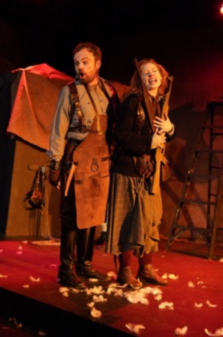
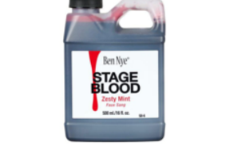
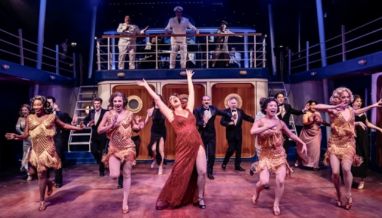
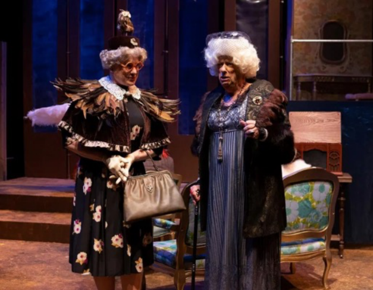
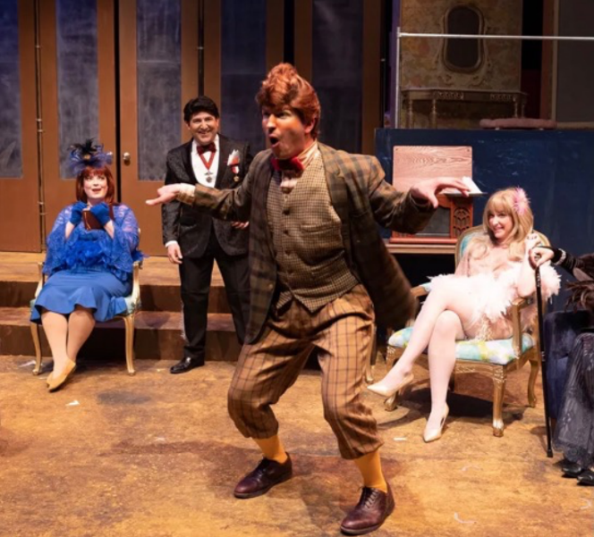

“I love that I’m doing something different every time, I love telling the stories through the clothes, I love the historical research that comes in the early parts of designing the costumes.”
-Rachel Boylan, Costume Designer
You’re at a thrift store looking for a vintage dress for a party. You happen to notice a woman examining large men’s suits. Is she shopping for her husband? Perhaps, but it’s also likely that she’s working for a storefront theater, doing the challenging job of sourcing costumes. Yes, thrift shops are often the best place to find certain items too expensive to create from scratch or even to rent. The costume designer at a small nonequity theater on a $400 budget has to be as creative as the head of a costume department at a major equity theater with a budget of $80,000.
Theatrical costumes in the Western tradition go back to ancient Greece. Festivals for Dionysus were renowned for their productions. Comic and tragic characters in classic Greek plays were signaled by smiling or sad masks. The focus was on the face, and in large outdoor amphitheaters, the use of masks enabled actors to convey emotions and focus attention on their words more effectively. Masks are also believed to help amplify actors’ voices. Such masks were made of leather, wood and other natural materials and have not survived, but thanks to Greek amphora, Roman copies, and other images, we have an idea of what they looked like.
|
|
Ancient Roman Mask British Museum |
By the Middle Ages, actors in religious plays wore clerical vestments as costumes to tell Bible stories. In Shakespeare’s era, during the 16th and 17th centuries, plays were primarily restricted to the upper classes, and the nobility’s own elaborate clothing was often borrowed for performances, reflecting the fashion of the time that the character portrayed. In the 18th and 19th century, costumes gradually became lighter and more functional. The 20th and 21st centuries brought both more realism and the redesigning of classic plays in modern dress and in periods outside those for which the plays were written. It’s hard to imagine any restrictions on today’s costumes outside the director’s imagination and budget.
Rachel Sypniewski, Jeff Award nominated resident costume designer at Trap Door Theatre, welcomes the challenge of the low-budget store front theatre scene. Having learned to sew from her mother, she earned money to supplement her acting scholarship at Knox College by working in the costume shop. She never saw costuming as a career path, however, until she came to Chicago and tried “this costume design stuff and 20 years later I’m still designing costumes.”
Trap Door specializes in underproduced and avant-garde European plays, enabling her to develop character in unconventional ways. “I can’t put Trap Door stuff on a Goodman stage. It’s niche work.” Sypniewski appreciates the ability to think abstractly and not just operate in realism. When she was first contacted by Trap Door, “I was initially shocked…it was like a breath of fresh air.” She began with just a few hundred dollars and developed what she calls the Trap Door vibe.
For “Bowie in Warsaw,” an absurdist dark comedy riffing on David Bowie’s 1970 Russian trip, she put the cast in similar colorful shirts. “For me it’s a pretty magical place. There’s something about the intimacy…There’s something about the community that is built……there’s a freedom…We can’t just throw money at it. We have to have high production value to tell our story in an interesting way through creativity.”
“Bowie in Warsaw” Trap Door Theatre
While she also works with other theaters, her most recent show was the Trap Door production of “Mother Courage and her Children” by the 20th century German Marxist playwright Bertolt Brecht. “We knew it would be a broad commentary on war. We weren’t concerned about a specific period look.” [The play is actually set in 17th century Europe during the 30 Years War.] As the audience comes into the theater, a projection on the rear curtain counts down the dates of all the European wars from the present to the time of the play.

Kevin Webb and Holly Cerney in “Mother Courage”
Sypniewski had begun the design process by looking at images from the director, not so much about a specific place or time but how the director wanted the audience to feel. “Then I might put boards together or do renderings, and review with the director and team… For Mother Courage, we knew we wanted to tell the story as a broad commentary on war. And so it didn’t need to be hyper period; we just needed to know that these people were profiteers entrenched in the capitalism of war so we pulled a lot of modern pieces…it was more storytelling.” Mother Courage’s costume carries out the dull color scheme of war in a long, full plaid skirt. The actress, Holly Cerney had pinned up the front of the skirt to move more easily in rehearsal. She and Sypniewski together decided it worked both for utility and symbolism and kept it. Collaboration infused every step of the process.
Among the more specific problems a costume designer might encounter is the need to deal with blood or the illusion of blood. For Sypniewski, the issues are very practical. “My first question is budgeting, who is taking care of it, is there a laundry, how many costumes do I need, etc. In my earlier days I made my own blood with dishwashing soap.” Corn syrup and red coloring are sometimes used. Premade washable stage blood is widely available but more expensive. Sometimes blood is abstractly represented with yarn or confetti, but the ultimate slight of hand was Theo Ubique’s production of “Sweeney Todd” in which just water was used, realistically displayed through red lighting that fooled distressed audience members who were splattered.

This particular brand of stage blood is $28 for 16 oz.
“I never like seeing blood in the script,” says Rachel Boylan, costume designer for Porchlight Music Theater’s “Anything Goes.” “I’ve encountered good blood and bad blood…[good blood] has to be easily washable.” Fortunately, she did not have to deal with blood in “Anything Goes.” Like Rachel Sypniewski, the Jeff Award nominated Boylan initially majored in acting. She attended Columbia College, which required a costume course, and she “quickly realized that auditioning was not for me.” One of her first jobs was as wardrobe supervisor at the Mercury Theatre. “It was good for me coming from an acting background to learn what the actors need to feel good and comfortable and safe in their clothes.” Proper hem lengths for dancing or tight hem stitching so heels don’t get caught are important; but “there’s also emotion safety when you have to go on stage every night, and if an actor doesn’t feel good in a costume he’s wearing, he doesn’t feel safe,” said Boylan.
Rachel Boylan
Boylan’s recent show at Porchlight, Cole Porter’s joyful “Anything Goes,” was set on an ocean liner in 1936. Her budget was a much more generous $12,000 – $14,000, but the size of the cast and needs of the show still required careful planning. The design process began with her looking at photographs or fashion plate renderings in magazines to get a taste for the clothes; she researched what was going on at the time to provide context for the story. “I start to establish what each character’s closet might look like, what they might wear, and that’s a good jumping off point to talk with the director, and we go back and forth about what the character might wear.” The actors’ input is important at the first fitting. Boylan watches body language to ascertain how an actor is feeling. Sullen looks and poor posture are telltale signs that adjustments need to be made.

Meghan Murphy as Reno Sweeny leads the chorus line in “Anything Goes.” Porchlight Music Theatre
“Anything Goes” features rigorous dancing. Boylan had to be sure skirts were wide enough to spin or split high enough for easy movement. Costumes that come from stock on hand might have to be altered to add panels or slits to allow for movement. Porchlight fortunately owns a good supply of tuxedoes. Tap shoes can be rented (new ones cost $200). Costumes can be rented, often from other theaters. For “Anything Goes” the only costumes built from scratch were for Meghan Murphy, the lead as Reno Sweeney. Some of her clothes were existing ones that were altered, and at least one dress had been built for her at another theater. Boylan found the glitzy dresses for the chorus on Amazon. “Amazon has really infiltrated quickly into the costume world. They ship quickly, the returns are free, and their variety is pretty far-reaching. They’re not always quality clothes – but you can get quality.”
Bill Morey and Beth Laske-Miller won the 2022 Jeff Award winners for Costume Design, for “A Fine Feathered Murder,” a Hell in a Handbag parody of an Agatha Christie murder mystery. The play presented very specific challenges, not the least of which was a budget in the low four figures. Not only were there a number of men to dress in women’s clothes, but in keeping with the title, feathers abounded. Unlike Boylan, Morey never studied costume design per se. He trained in other aspects of theater including acting and directing, but he likes to work with his hands. “I got tired of going to the theater during the rehearsal process. With costume design, when it’s done, you can move on.” Because he doesn’t sew himself, he explained, “I usually get someone else to make the dresses. I make hats… I draw, I collect a lot of images, I like to use existing costumes and move them around. I can have a few costumes made and then work around them.” Morey points out that all designers are to some extent dependent on other people. “I worked with Beth Laske-Miller for “Fine Feathered Murder. She’s an excellent seamstress so she built some things, and I glued some feathers on hats…” Theaters are by design collaborative.
“The biggest challenge was the [costumes for the] feather ball. Feathers are expensive…” The way feathers are sold also presented a challenge, Morey explained, but he also had learned a hack. “You’ll buy a roll of feathers and they’re glued to a roll of fabric. It’s easy to gum up a sewing machine needle with glue. If you take a dryer sheet and lay it on top of the glue strip you’re sewing, the dryer sheet takes the glue off the needle.” The only thing worse, he said, is sewing sequins; the tiny plastic discs inevitably break needles.

“A Fine Feathered Murder” Hell in a Handbag Productions

“A Fine Feathered Murder” Hell in a Handbag Productions
Another potential challenge for all Hell in a Handbag productions is the norm of several men wearing women’s costumes. But Morey doesn’t see that as a particular problem today. “Americans are bigger now and come in more a variety of sizes so that helps…larger sized shoes can be difficult. But again there is so much drag these days, [shoes are available] but they are more expensive.” Fortunately, many actors have their own shoes when unusual sizes are needed.
Morey faces his biggest challenge when a costume has to transform itself through a dramatic reveal. “There’s a dress in “Dream Girls” that has to become another dress,” he recalled, “…like in Cinderella, the ball gown. You have to work backwards.” There are then layers of fabric that have to start out in another arrangement. “People in musicals want that more and more, he said. “Nothing is particularly difficult, however, if you have enough time to do it.” Like Boylan, he finds many items on the internet. For some items, even thrift stores can be too expensive; a shirt that used to cost $3-$4 might be $15 today. Fortunately, theaters often share costumes or rent to each other at reasonable cost. A theater might even rent specialized clothing from an actor himself or herself, for a fee regulated by the Equity contract.
Morey confers with the director, then the scenic designer, the lighting designer, the props manager, and the make-up artist to get the look he wants. Sometimes a costume will have to do multiple jobs, identify the character’s class, what the character does, etc., particularly if the set is abstract. Morey recently designed the costumes for “Cabaret” at Porchlight and needed to source 1940s costumes. He researched the era, understanding the details of the clothing, the colors popular in the era, and the historic context of Nazism. He saw the need to dress two worlds, the cabaret performers, and the everyday Berliners.
“You never get awards for contemporary clothing,” Morey notes. “Everyone thinks he or she is an expert on contemporary clothing. Costumes are not fashion. Costumes must tell a story. It’s not about the clothes, it’s about the people who are wearing them, it’s about what they’re doing,” he said.
And what of the productions with $80,000 plus budgets? At these large equity theaters like the Paramount in Aurora or Drury Lane in Oak Brook, the costume designer becomes a costume department. The roles can be many: manager, designer, pattern maker, draper, first-hand seamstress, builder, alteration specialist, dresser plus assistants in these areas as well. Special costumes like an illuminated ball gown for Glinda the Good Witch in the 2019 Wizard of Oz Paramount production can take 100 hours to make. Some Chicago productions will outsource a costume to a New York-based builder when local craftspeople are booked.
For Rachel Boylan, the whole package of costume design is appealing; the remaining challenge is finding time for the rest of her life. “I really like working with people, to me it’s a team sport. I grew up playing actual sports and this is sort of my outlet for a team sport…I love it…I do have a family [however] and I want to spend time with them; I’m really working to find a work-life balance.”